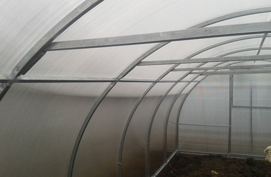
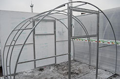

Только мы даем трехлетнюю гарантию
на теплицы из поликарбоната, купленные у нас
и смонтированные нашими монтажниками.
Доставка по всей
Челябинской области
Челябинской области
+7 (351) 202-03-09
Челябинск, ул. Сони Кривой, 121
Теплицы из поликарбоната
от производителя в Челябинске
Уже более 10 лет мы производим теплицы из поликарбоната высого качества. В нашей линейки присутствуют как стандартные («Дачница», «Синьор Помидор»), так и усиленные теплицы («Эдем» и «Райский Сад»).
Монтаж теплиц осуществляется высококвалифицированными специалистами. Мы сотрудничаем только с лучшими отечественными и импортными поставщиками. Благодаря этому мы воплощаем в наших теплицах из поликарбоната все самые лучшие технические решения.
Выбрать комплектацию или воспользоваться калькулятором теплиц
До конца акции осталось:
00
Дней00
Часов00
Минут
или купить в один клик
Что мы предлагаем?
Укомплектованная
теплица
Вы ничем
не рискуете
Бесплатная
доставка
Профессиональная
установка

Сервисное
обслуживание
Агротехнологии
понятным языком
Мы против спама. Наша рассылка отличается
краткостью, четкостью и ясностью описания.
Только суть — никакой воды.
краткостью, четкостью и ясностью описания.
Только суть — никакой воды.
Что особенного в наших теплицах?
Преимущества конструкции

Каркас
Каркас теплицы изготовлен из оцинкованной стальной трубы с толщиной стенок 1,5мм. Труба оцинковывается с двух сторон - снаружи и внутри! Толщина оцинковки 180 мкм В зависимости от размера и модели сечение трубы: 20*20 или 20*40.Цельногнутые Дуги
Цельногнутые дуги с шагом 50 см, 67 смили 100 см придают максимальную жесткость конструкции, делая каркас монолитным.
Цельносварной торец
Надежный и качественный, делает конструкциютеплицы максимально жесткой.
Отсутствует перекос дверей весной.
Сотовый поликарбонат (СПК)
Имеет защиту от ультрофиолета.Толщина: 4мм
Плотность: 0,56-0,7кг/м2.
Гарантия: 10 лет (на листы).
Правильное расположение СПК
На торцах теплицы соты СПК направлены вертикально сверху, вниз (почти у всех других моделей теплиц соты расположены горизонтально). Конденсат в листе СПК не задерживается, а стекает на землю!!!Два широких дверных проема.
Ширина дверного проема 800мм.Через них легко проходит садовая тачка.
Мелочь, а приятно. В каждой двери
имеется форточка. Две форточки
обеспечивают прекрасную вентиляцию
весной.
Надежная фурнитура
Полный комплект необходимой фурнитуры: Евроручки для форточек и дверей, гайки, болты, пошаговая инструкцию по сборке.Установка теплицы
За счет цельносварного фасада и дуг Вы соберете теплицу за три часа. А так же Вы всегда можете заказать у нас установку теплицы высококвалифицированными специалистами.Микроклимат внутри
Наш основной бизнес — это выращивание в теплицах рассады цветов и овощей.
Поэтому мы знаем, насколько важен микроклимат для получения урожаев.
Итак, вот, что входит в комплект теплицы.
Автоматические форточки
Весной, если вовремя не проветритьтеплицу, можно лишиться своей рассады.
Почему? Жара. Согласитесь, не всегда
получается оказаться рядом с теплицей
в нужный момент. Вот тут и спасает
автомат. Он сам откроет и закроет
форточку в нужный момент. Без вашего участия.
Он работает без электричества.
Капельный полив
Это отдельная история. Одно егоприменение повышает урожайность на 30%.
Многие наши клиенты по началу говорили:
«Да мы и с леечки польем ))». Но после
того, как увидели результат от капельного
полива, не променяют его больше
ни на что.
Затеняющий экран
Летом во всех поликарбонатных теплицахстоит жара. Форточки и двери
на распашку, но это не спасает.
Затеняющий экран — одно из основных
решений этой проблемы. Он пропускает
нужный растениям свет и отражает
сжигающий ультрафиолет. Ни лутрасила,
ни маскировочная сетка таких результатов
не дают. Пробовали!
Профиль для крепления
экрана
Самым простым и быстрым решениемдля крепления пленок, светозащитных
и тентовых материалов является
оцинкованный профиль зиг-заг.
Удобно поправлять, снимать и заменять.
Мелочи, делающие погоду
Теплицы из поликарбоната укомплектованы всеми необходимыми мелочами, которые реально делают «погоду» и о которых «забыли» в большинстве
других моделей теплиц.
Крючки для фиксации форточек и дверей в открытом положении. Безних двери и форточки просто болтаются на ветру. Во всех моделях
теплиц предусмотрены фиксаторы дверей и форточек с наружней
стороны. А вот как фиксировать двери и форточки с внутренней
стороны — об этом производители теплиц умалчивают. Ранней весной
когда вы заходите в теплицу нужно плотно закрыть за собой дверь.
А как, если фиксаторы не предусмотрены? В наших теплицах эта
проблема устранена.
А выстоит ли теплица зимой?
Наши теплицы стоят не только на Урале, но и
в северных регионах нашей страны. И прекрасно
держат снеговую нагрузку и вот почему.
Теплицы имеют форму арки. И снег легко скатывается и сдуваетсяветром. Снег «задерживается» только на коньке. Поэтому,
выставленные с осени внутри теплицы подпорки переносят всю нагрузку
с конька на землю.
Входящие в комплект теплицы усилители дуг значительно усиливают
конструкцию.
Конечно, очень многие дачники не ставят подпорки на зиму. Говорят:
«Стояла, стоит и будет стоять». Но мы этого делать не рекомендуем.
Характеристики
 Ширина теплицы 3 метра(Достаточно широкая, что бы вместить в себя две грядки шириной 1,2м или три шириной по 60см). Так же у нас можно заказать теплицу шириной 2 или 2,5 метра.
Высота теплицы 2,1 метра
(а при установке на деревянный фундамент — все 2,25м) Высота достаточная для создания оптимального макроклимата внутри самой теплицы.
Длина теплицы: 4м, 6м, 8м, 10м, 12м…
Каркас теплицы: оцинкованная или крашеная труба, сечением 20*20 или 20*40 мм.
Комплектации
Мы укомплектовали свои теплицы всем необходимым оборудованием, что бы вы получали ранние и высокие
урожаи. Комплектация «Стандарт», комплектация «Оптимум» — для тех, кто знает силу технологий,
комплектация «VIP» — теплица, в которую ВСЕ ВКЛЮЧЕНО.
| Комплектующие | Стандарт | Оптимум | VIP |
|
Усиленный каркас теплицы
(2 двери, 2 форточки в каждой двери) |
+ | + | + |

Класс СТАНДАРТ. Сотовый поликарбонат толщиной 4мм (плотность 0,65 кг/м2)
|
+ | + | - |
|
Класс ПРОФИ. Сотовый поликарбонат толщиной 4мм (плотность 0,8 кг/м2)
|
- | - | + |
|
Защитный профиль, чтобы поликарбонат не мутнел
|
+ | + | + |

Стяжная оцинкованная лента
|
- | + | + |
|
Затеняющий экран
|
- | - | + |
|
Верхняя форточка
|
- | + | - |
|
Автомат для открывания форточки (термопривод)
|
- | + | + |
|
Профессиональная система
капельного полива Реально повышает урожай в 2 раза! |
- | + | + |
|
Контролер для автоматического
полива. |
- | - | + |
|
Фундамент для теплицы.
|
- | - | + |
|
Бесплатная доставка
по Челябинску и близлежащим районам. |
+ | + | + |
|
Бесплатная установка
по Челябинску и близлежащим районам. |
- | - | + |
| Стоимость: | от 9 400 руб. | от 12 400 руб. | от 16 900 руб. |
Стоимость
Теплицы класс УСИЛЕННЫЕ
|
«Райский Сад» Усиленная оцинкованная теплица Описание |
 Эдем Усиленная двудугая теплица Описание |
|||||
| Длина 4м | Длина 6м | Длина 8м | Длина 4м | Длина 6м | Длина 8м | |
|---|---|---|---|---|---|---|
| Каркас | 7 900 руб. | 9 900 руб. | 12 200 руб. | 7 900 руб. | 9 900 руб. | 12 200 руб. |
| Комплект | 11 400 руб. | 14 400 руб. | 17 400 руб. | 11 400 руб. | 14 400 руб. | 17 400 руб. |
| Фундамент | 1 200 руб. | 1 600 руб. | 2 000 руб. | 1 200 руб. | 1 600 руб. | 2 000 руб. |
| Под ключ | 15 600 руб. | 18 900 руб. | 23 400 руб. | 15 600 руб. | 18 900 руб. | 23 400 руб. |
| Комплект «Под ключ» включает в себя: каркас, поликарбонат 4 мм, фурнитура (навесы, завертки, соединители «Краб-система», фундамент из бруса 100х100 пропитанный антисептиком и профессиональный монтаж. Доставка в стоимость теплицы «Под ключ» не включена. |
||||||
Теплицы класса СТАНДАРТ
|
«Дачница» Арочная теплица Описание |
Синьор Помидор Теплица «Капелька» Описание |
||||||
| Длина 4м | Длина 6м | Длина 8м | Длина 4м | Длина 6м | Длина 8м | ||
|---|---|---|---|---|---|---|---|
| Каркас | 5 900 руб. | 6 900 руб. | 7 900 руб. | 7 900 руб. | 9 900 руб. | 12 200 руб. | |
| Комплект | 9 400 руб. | 12 400 руб. | 15 400 руб. | 11 400 руб. | 14 400 руб. | 17 400 руб. | |
| Фундамент | 1 200 руб. | 1 600 руб. | 2 000 руб. | 1 200 руб. | 1 600 руб. | 2 000 руб. | |
| Под ключ | 13 600 руб. | 16 900 руб. | 21 400 руб. | 15 600 руб. | 18 900 руб. | 23 400 руб. | |
| Комплект «Под ключ» включает в себя: каркас, поликарбонат 4 мм, фурнитура (навесы, завертки, соединители «Краб-система», фундамент из бруса 100х100 пропитанный антисептиком и профессиональный монтаж. Доставка в стоимость теплицы «Под ключ» не включена. |
|||||||
До конца акции осталось:
00
Дней00
Часов00
Минут
или купить в один клик
Доставка и оплата
Теплицы из поликарбоната с бесплатной доставкой по Челябинску и его пригороду.
Доставим до транспортных компаний бесплатно.
Мы делаем доставку теплиц до двери по всей Челябинской области.
Уточняйте цену доставки у менеджеров нашего магазина.
Сроки доставки/отгрузки товара от 3 до 10 дней с момента поступления оплаты.
Оплатить стоимость теплицы можно 2 способами:
1. Безналичный расчет — высылаем вам на почту счет, оплатить
который можно в любом банке Росии.
2. Оплата наличными — производится у нас в офисе или
при получении курьеру.
3. Срок действия предложения по выставленному счету 3 дня.
ООО "Центр Теплиц"
Мы делаем доставку теплиц до двери по всей Челябинской области.
Уточняйте цену доставки у менеджеров нашего магазина.
Сроки доставки/отгрузки товара от 3 до 10 дней с момента поступления оплаты.
Оплатить стоимость теплицы можно 2 способами:
1. Безналичный расчет — высылаем вам на почту счет, оплатить
который можно в любом банке Росии.
2. Оплата наличными — производится у нас в офисе или
при получении курьеру.
3. Срок действия предложения по выставленному счету 3 дня.
ООО "Центр Теплиц"
Альтернатива?
Приобрести обычную теплицу у конкурентов, нанять установщиков, которые не дают гарантии и потратить
много времени на поиск информации, как спастись в поликарбонатной теплице от жары.
много времени на поиск информации, как спастись в поликарбонатной теплице от жары.
Калькулятор теплиц
Выберите желаемые параметры теплицы
Комплектация
Каркас
Комплект
Комплект + Фундамент
Под ключ
Класс Усиленная
Класс Усиленная
Теплицы этого класса устанавливаются в районах с большими снеговыми и ветровыми нагрузками. А так же если планируете оставлять теплицу на всю зиму без присмотра
Основная особенность теплиц из класса усиленная – повышенная несущая способность. Это достигается при помощи особенностей каркаса (толщина металла каркаса, шаг несущих дуг, верхние и фасадные усиления)
Для покрытия теплиц этого класса применения СПК класса ПРОФИ
Эдем
Райский Сад
Класс Стандарт
Класс Стандарт
Теплицы этого класса устанавливаются в районах с умеренными снеговыми и ветровыми нагрузками. А так же если теплица всю зиму находятся под присмотром (при необходимости клиент может подойти и счистить лишний снег)
Дачница
Синьор Помидор
С шагом
Класс Стандарт
Теплицы этого класса устанавливаются в районах с умеренными снеговыми и ветровыми нагрузками. А так же если теплица всю зиму находятся под присмотром (при необходимости клиент может подойти и счистить лишний снег)
1 метр
0.67 метра
0.5 метра
Длина теплицы, м
4
6
8
10
Из профиля
Класс Стандарт
Теплицы этого класса устанавливаются в районах с умеренными снеговыми и ветровыми нагрузками. А так же если теплица всю зиму находятся под присмотром (при необходимости клиент может подойти и счистить лишний снег)
20x20
20x40
Сотовый поликарбонат
СПК Класс СТАНДАРТ
Сотовый поликарбонат класс СТАНДАРТ
Сотовый поликарбонат класса СТАНДАРТ – это СПК с плотностью листа 650 гр/м2. Большинство производителей укомплектовывают каркасы своих теплицы поликарбонатом именно этого класса
Характеристики листа
- ширина 2,1м
- длина 6,0м
- толщина 4мм
- минимальный радиус изгиба 0,7м
- цвет – прозрачный
СПК Класс ПРОФИ.
Сотовый поликарбонат класс ПРОФИ
Сотовый поликарбонат класса ПРОФИ – это СПК с плотностью листа 800 гр/м2. По сравнению с СПК класса СТАНДАРТ листы ПРОФИ имеют большую жесткость и несущею способность (при абсолютно тех же размерах)
Рекомендуется применять данные листы в местах с обильным выпадением снега
Характеристики листа
- ширина 2,1м
- длина 6,0м
- толщина 4мм
- минимальный радиус изгиба 0,7м
- цвет - прозрачный
Фундамент
Класс Стандарт
Теплицы этого класса устанавливаются в районах с умеренными снеговыми и ветровыми нагрузками. А так же если теплица всю зиму находятся под присмотром (при необходимости клиент может подойти и счистить лишний снег)
Сосна
Сотовый поликарбонат класс СТАНДАРТ
Сосна – это СПК с плотностью листа 650 гр/м2. Большинство производителей укомплектовывают каркасы своих теплицы поликарбонатом именно этого класса
Характеристики листа
- ширина 2,1м
- длина 6,0м
- толщина 4мм
- минимальный радиус изгиба 0,7м
- цвет – прозрачный
Листвиница
Сотовый поликарбонат класс СТАНДАРТ
Листвиница – это СПК с плотностью листа 650 гр/м2. Большинство производителей укомплектовывают каркасы своих теплицы поликарбонатом именно этого класса
Характеристики листа
- ширина 2,1м
- длина 6,0м
- толщина 4мм
- минимальный радиус изгиба 0,7м
- цвет – прозрачный
Микроклимат
Верхняя форточка
Верхняя форточка
Основная проблема поликарбонатных теплиц летом – это страшная жара внутри теплиц летом. Раскрытые настежь двери с жарой не справляются. Вот тут и приходят на помощь верхние форточки.
Термопривод
Вся прелесть в том, что автомат все делает без вашего участия. Он механический, поэтому электричество не нужно. С ним вы можете не переживать за ваши растения.
Автомат для открывания форточки
Автомат для открывания форточек - незаменимая вещь для поддержания микроклимата. Принцип действия очень простой. В теплице поднимается температура выше 23 градусов, автомат начинает открывать форточку. Температура понижается ниже 23 - автомат закрывает форточку.Вся прелесть в том, что автомат все делает без вашего участия. Он механический, поэтому электричество не нужно. С ним вы можете не переживать за ваши растения.
Система капельного полива
Система капельного полива
Основная задача капельного полива – повысить урожайность.- Он обеспечивает дозированную подачу воды и медленно насыщает ею землю.
- Земля при капельном поливе не слеживается, не берется коркой. Поэтому корни растений нормально дышат, что тоже в значительной мере влияет на урожайность.
- Ну, и конечно, сам полив экономит массу вашего времени, так как все делает сам. Вам нужно будет только открыть кран.
Контроллер автоматического полива
Контроллер автоматического полива
С помощью контролера можно задать программу на неделю, и он сам откроет и закроет основной кран. То есть, все поливается без вашего участия. Это удобно, если у вас есть дела и вы не всегда можете появиться на своей теплице.
Доставка
Класс Стандарт
Теплицы этого класса устанавливаются в районах с умеренными снеговыми и ветровыми нагрузками. А так же если теплица всю зиму находятся под присмотром (при необходимости клиент может подойти и счистить лишний снег)
КМ
Бесплатно!
Система капельного полива
для грядки 12 м2
при покупке теплицы
Система капельного полива
для грядки 12 м2
при покупке теплицы
Система капельного полива
Основная задача капельного полива – повысить урожайность.- Он обеспечивает дозированную подачу воды и медленно насыщает ею землю.
- Земля при капельном поливе не слеживается, не берется коркой. Поэтому корни растений нормально дышат, что тоже в значительной мере влияет на урожайность.
- Ну, и конечно, сам полив экономит массу вашего времени, так как все делает сам. Вам нужно будет только открыть кран.
До конца акции осталось:
00
Дней00
Часов00
Минут
или купить в один клик
Мы не продаем товар — мы продаем
готовое решение
В отличии от конкурентов мы разбираемся в технологиях выращивания. Поэтому можем полностью
грамотно укомплектовать теплицы для получения ранних и обильных урожаев.

Гарантия 3 года
Сервисное обслуживание
Мы единственные кто «ведет теплицы»
и после продажи. В нашем магазине есть
услуга сервисный мастер. Если возникают
проблемы с теплицей — приедем
и устраним.
и после продажи. В нашем магазине есть
услуга сервисный мастер. Если возникают
проблемы с теплицей — приедем
и устраним.
Вы ничем не рискуете
Если теплица не оправдает ваших ожиданий, мы
вернем вам деньги. Таким образом, Вы ничем не
рискуете.
вернем вам деньги. Таким образом, Вы ничем не
рискуете.
Профессиональная установка
Самое сложное весной — это найти нормальных
установщиков. Увы. Сезон. Но в данном случае
эта проблема Вас никак не касается. Удобное для Вас время. Лучшая команда и личная приемка установки техническим директором
Вам обеспечена.
установщиков. Увы. Сезон. Но в данном случае
эта проблема Вас никак не касается. Удобное для Вас время. Лучшая команда и личная приемка установки техническим директором
Вам обеспечена.
В прошлом году мы установили 537 теплиц
Что говорят люди, уже испытавшие
наши теплицы?
Добрый день.
Теплицу приобретала зимой, т.к. было очень выгодное предложение: рассрочка, скидка и хранение до весны. Теплица ждет своего часа на закрытом складе, что очень радует. Иначе лежала бы у меня на огороде под открытым небом. Через месяца уже начну готовить рассаду для теплицы.
Теплицу приобретала зимой, т.к. было очень выгодное предложение: рассрочка, скидка и хранение до весны. Теплица ждет своего часа на закрытом складе, что очень радует. Иначе лежала бы у меня на огороде под открытым небом. Через месяца уже начну готовить рассаду для теплицы.
Здравствуйте!
Я заказала теплицу из поликарбоната без монтажа, т.к. мне повезло, и ее есть кому собрать. Теплицу довезли до участка и аккуратно выгрузили. Порадовала оплата по факту доставки. Потому что в наше время не знаешь, кому доверять. И всегда боишься вносить предоплату. На монтаж теплицы своими силами ушло около пяти часов. Вроде все прошло успешно. Теперь жду весны, чтобы начать пожинать плоды.
Я заказала теплицу из поликарбоната без монтажа, т.к. мне повезло, и ее есть кому собрать. Теплицу довезли до участка и аккуратно выгрузили. Порадовала оплата по факту доставки. Потому что в наше время не знаешь, кому доверять. И всегда боишься вносить предоплату. На монтаж теплицы своими силами ушло около пяти часов. Вроде все прошло успешно. Теперь жду весны, чтобы начать пожинать плоды.
Добрый день.
Теплицу привезли в день, который был заранее обговорен. Водитель предваритально за час позвонил. Заказывали усиленную теплицу вместе с монтажом. Собрали за 3 часа. Понравилось отношение монтажников к работе: все делали аккуратно, добросовестно. Уже высадили рассаду в теплицу. Ждем обильного оружая.
Теплицу привезли в день, который был заранее обговорен. Водитель предваритально за час позвонил. Заказывали усиленную теплицу вместе с монтажом. Собрали за 3 часа. Понравилось отношение монтажников к работе: все делали аккуратно, добросовестно. Уже высадили рассаду в теплицу. Ждем обильного оружая.
Приветствую!
Доставили до Миасса точно в срок. Проблем никаких не возникло. Понравилась работа менеджеров и их общение с клиентами. Очень профессионально. Выгрузили теплицу сразу на место сборки. Особых проблем с которой не было (собирал один). В целом, теплица понравилась. Сразу заметно, что материал качественный, профиль усиленный, поликарбонат хороший. Особенно удивила жёсткость каркаса после обтяжки. Стоит как влитой.
Доставили до Миасса точно в срок. Проблем никаких не возникло. Понравилась работа менеджеров и их общение с клиентами. Очень профессионально. Выгрузили теплицу сразу на место сборки. Особых проблем с которой не было (собирал один). В целом, теплица понравилась. Сразу заметно, что материал качественный, профиль усиленный, поликарбонат хороший. Особенно удивила жёсткость каркаса после обтяжки. Стоит как влитой.
Акции «Тепличного магазина»
Мы против спама. Наша рассылка отличается
краткостью, четкостью и ясностью описания.
Только суть — никакой воды.
краткостью, четкостью и ясностью описания.
Только суть — никакой воды.
Успейте
на другие акции
Мы регулярно раздаем подарки и скидки от нашего магазина на самитеплицы, а также на комплектующие к ним и даже на рассаду.
Но воспользоваться такими эксклюзивными условиями могут только наши
подпсчики. Подписывайтесь и покупайте выгодно.
Эксклюзивная скидка на наши товары
в каждом письме!
в каждом письме!
ООО "Центр Теплиц"
Реквизиты
Доставка по всей
Челябинской области
Челябинской области
+7 (351) 202-03-09
Челябинск, ул. Сони Кривой, 121
Адрес магазина
Челябинск, ул. Сони Кривой, 121
Телефон: +7 (351) 750-19-09
Время работы: Пн - Вс с 900 до 1900
Сб с 1000 до 1600
Телефон: +7 (351) 750-19-09
Время работы: Пн - Вс с 900 до 1900
Сб с 1000 до 1600
Наши реквизиты
ООО «Центр Теплиц»
Производство: г. Челябинск, ул. Маслобазовая, 6
Юридический Адрес: г. Челябинск, ул. Сони Кривой, 121, оф. 711
Связаться с нами: +7 (351) 202-03-09
Работаем без выходных с 9:00 до 19:00
Производство: г. Челябинск, ул. Маслобазовая, 6
Юридический Адрес: г. Челябинск, ул. Сони Кривой, 121, оф. 711
Связаться с нами: +7 (351) 202-03-09
Работаем без выходных с 9:00 до 19:00

Ваш город
| Все города | Сатка |
| Златоуст | Чебаркуль |
| Миасс | Челябинск |
| Копейск | Троицк |
| Пласт | Аша |
| Верхний Уфалей | Долгодеревенское |
| Варна |
Оформить заказ
Теплица из поликарбоната с Райский Сад, длиной 4м в комплектации Стандарт.
20905 руб.
Выбрать другую теплицу
Ваше имя
например, Александр
Телефон
например, +7 951 234 56 78
Ваш email
например, alex@mail.com
Адрес
например, Челябинск, ул. Воровского 1, кв. 35
Промокод
Мы свяжемся с вами в течение рабочего дня
для уточнения деталей
Заказать теплицу
Выберите параметры вашей теплицы
Тип теплицы
Длина теплицы
Комплектация
20905 руб.
На следующем шаге нужно будет
сообщить свои данные для заказа
Оформить заказ
Теплица из поликарбоната. Тип теплицы: , комплектация: , длина: .
0 руб.
Ваше имя
например, Александр
Телефон
например, +7 951 234 56 78
Ваш email
например, alex@mail.com
Адрес
например, Челябинск, ул. Воровского 1, кв. 35
Промокод
Мы свяжемся с вами в течение рабочего дня
для уточнения деталей
Покупка в
один клик
один клик
Это реальная возможность не тратить
время на заполнение формы заявки.
Наш менеджер подготовит все
необходимые данные для оформления
покупки сообщит вам стоимость и
дату доставки.
Ваш телефон:
например, 8-912-123-45-67
Спасибо за заявку